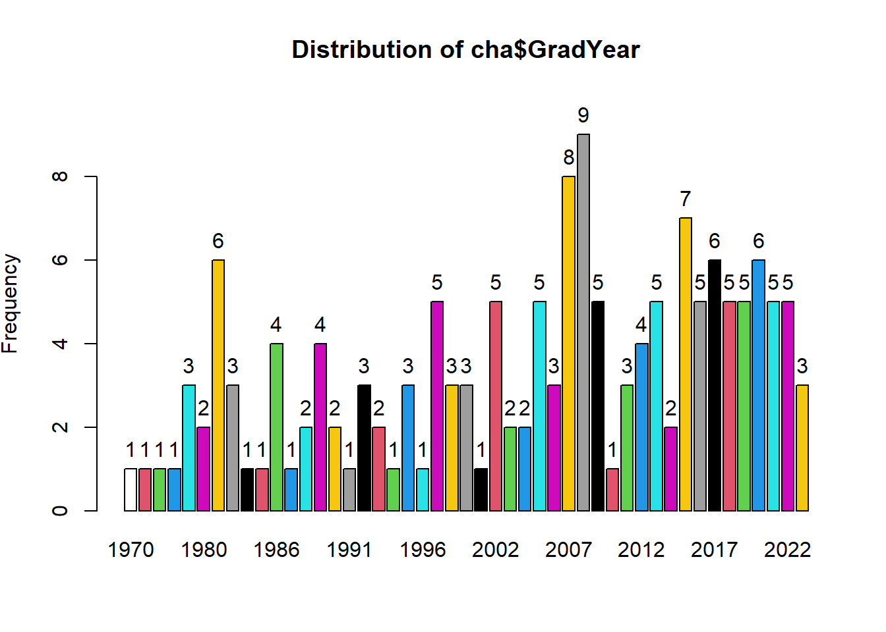

cha$VetSchool :
Frequency Percent Cum. percent
Ontario Veterinary College 24 15.3 15.3
University of Minnesota 17 10.8 26.1
University of Wisconsin - Madison 13 8.3 34.4
Cornell University 13 8.3 42.7
Michigan State University 10 6.4 49.0
Universite de Montreal 9 5.7 54.8
University of Pennsylvania 8 5.1 59.9
Atlantic Veterinary College 7 4.5 64.3
The Ohio State University 6 3.8 68.2
Iowa State University 6 3.8 72.0
University of Saskatchewan 5 3.2 75.2
Other 5 3.2 78.3
Colorado State University 5 3.2 81.5
Washington State University 4 2.5 84.1
University of California - Davis 4 2.5 86.6
University of Missouri-Columbia 3 1.9 88.5
University of Illinois 3 1.9 90.4
Virginia Tech 2 1.3 91.7
University of Florida 2 1.3 93.0
North Carolina State University 2 1.3 94.3
Mississippi State University 2 1.3 95.5
Auburn University 2 1.3 96.8
Unviersity of Georgia 1 0.6 97.5
University of Tennessee 1 0.6 98.1
Tufts University 1 0.6 98.7
Texas A&M University 1 0.6 99.4
Purdue University 1 0.6 100.0
Total 157 100.0 100.0
cha$GradYear :
Frequency Percent Cum. percent
1970 1 0.6 0.6
1973 1 0.6 1.3
1974 1 0.6 1.9
1975 1 0.6 2.5
1979 3 1.9 4.5
1980 2 1.3 5.7
1981 6 3.8 9.6
1982 3 1.9 11.5
1983 1 0.6 12.1
1985 1 0.6 12.7
1986 4 2.5 15.3
1987 1 0.6 15.9
1988 2 1.3 17.2
1989 4 2.5 19.7
1990 2 1.3 21.0
1991 1 0.6 21.7
1992 3 1.9 23.6
1993 2 1.3 24.8
1994 1 0.6 25.5
1995 3 1.9 27.4
1996 1 0.6 28.0
1997 5 3.2 31.2
1998 3 1.9 33.1
1999 3 1.9 35.0
2000 1 0.6 35.7
2002 5 3.2 38.9
2003 2 1.3 40.1
2004 2 1.3 41.4
2005 5 3.2 44.6
2006 3 1.9 46.5
2007 8 5.1 51.6
2008 9 5.7 57.3
2009 5 3.2 60.5
2010 1 0.6 61.1
2011 3 1.9 63.1
2012 4 2.5 65.6
2013 5 3.2 68.8
2014 2 1.3 70.1
2015 7 4.5 74.5
2016 5 3.2 77.7
2017 6 3.8 81.5
2018 5 3.2 84.7
2019 5 3.2 87.9
2020 6 3.8 91.7
2021 5 3.2 94.9
2022 5 3.2 98.1
2023 3 1.9 100.0
Total 157 100.0 100.0
cha$TimefromGrad :
Frequency Percent Cum. percent
aLess than 5 24 15.3 15.3
bfive to ten 30 19.1 34.4
celeven to fifteen 22 14.0 48.4
dsixteen to twenty 20 12.7 61.1
etwenty one to twenty five 12 7.6 68.8
ftwenty six to thirty 12 7.6 76.4
gthirty one to thirty five 12 7.6 84.1
hthirty six to forty 7 4.5 88.5
igreater than 40 18 11.5 100.0
Total 157 100.0 100.0cha$PracticeRegion :
Frequency Percent Cum. percent
Wisconsin 23 14.6 14.6
Ontario 19 12.1 26.8
New York 13 8.3 35.0
Minnesota 13 8.3 43.3
Quebec 12 7.6 51.0
California 8 5.1 56.1
Pennsylvania 7 4.5 60.5
Texas 6 3.8 64.3
Michigan 5 3.2 67.5
Vermont 4 2.5 70.1
Idaho 4 2.5 72.6
Colorado 4 2.5 75.2
Ohio 3 1.9 77.1
Iowa 3 1.9 79.0
Illinois 3 1.9 80.9
Alberta 3 1.9 82.8
Washington 2 1.3 84.1
Oregon 2 1.3 85.4
North Carolina 2 1.3 86.6
New Mexico 2 1.3 87.9
New Brunswick 2 1.3 89.2
Indiana 2 1.3 90.4
Florida 2 1.3 91.7
British Columbia 2 1.3 93.0
Utah 1 0.6 93.6
Tennessee 1 0.6 94.3
South Dakota 1 0.6 94.9
Saskatchewan 1 0.6 95.5
Nova Scotia 1 0.6 96.2
Newfoundland and Labrador 1 0.6 96.8
Missouri 1 0.6 97.5
Massachusetts 1 0.6 98.1
Manitoba 1 0.6 98.7
Georgia 1 0.6 99.4
Arizona 1 0.6 100.0
Total 157 100.0 100.0
cha$Gender :
Frequency Percent Cum. percent
Man 77 49.0 49.0
Woman 76 48.4 97.5
Prefer not to say 3 1.9 99.4
Non-binary 1 0.6 100.0
Total 157 100.0 100.0
cha$Age :
Frequency Percent Cum. percent
25-35 48 30.6 30.6
36-45 42 26.8 57.3
46-55 25 15.9 73.2
56-65 20 12.7 86.0
66-75 19 12.1 98.1
over 75 2 1.3 99.4
prefer not to say 1 0.6 100.0
Total 157 100.0 100.0cha$PrimaryEmployer :
Frequency Percent Cum. percent
Private practice 110 70.1 70.1
Industry 18 11.5 81.5
Academia 15 9.6 91.1
Farm/Ranch 9 5.7 96.8
Government 3 1.9 98.7
Prefer not to say 1 0.6 99.4
Other (Please Specify) 1 0.6 100.0
Total 157 100.0 100.0cha$Country :
Frequency Percent Cum. percent
US 115 73.2 73.2
CAN 42 26.8 100.0
Total 157 100.0 100.0
usa$Top10Dairy :
Frequency Percent Cum. percent
1 83 72.2 72.2
0 32 27.8 100.0
Total 115 100.0 100.0usa$DairyRegion :
Frequency Percent Cum. percent
MW 54 47.0 47.0
NE 25 21.7 68.7
SW 17 14.8 83.5
NW 13 11.3 94.8
SE 6 5.2 100.0
Total 115 100.0 100.0
canada$DairyRegion :
Frequency Percent Cum. percent
CANE 31 73.8 73.8
CANW 7 16.7 90.5
MAR 3 7.1 97.6
ATL 1 2.4 100.0
Total 42 100.0 100.0cha$`Type of Operations` :
Frequency
Calf Ranch,Feedlot 1
Dairy,Calf Ranch,Feedlot 1
Dairy,Calf Ranch,Feedlot,Stocker/Backgrounder 1
Dairy,Calf Ranch,Feedlot,Stocker/Backgrounder,Cow/Calf,Other (Please Specify) 1
Dairy,Cow/Calf,Other (Please Specify) 1
Dairy,Feedlot,Cow/Calf,Other (Please Specify) 1
Dairy,Stocker/Backgrounder,Cow/Calf 3
Dairy,Calf Ranch,Stocker/Backgrounder,Cow/Calf 4
Dairy,Calf Ranch,Feedlot,Cow/Calf 5
Dairy,Calf Ranch,Cow/Calf 7
Dairy,Feedlot,Stocker/Backgrounder,Cow/Calf 11
Dairy,Calf Ranch,Feedlot,Stocker/Backgrounder,Cow/Calf 13
Dairy,Calf Ranch 14
Dairy,Feedlot,Cow/Calf 18
Dairy,Cow/Calf 27
Dairy 49
Total 157
Percent
Calf Ranch,Feedlot 0.6
Dairy,Calf Ranch,Feedlot 0.6
Dairy,Calf Ranch,Feedlot,Stocker/Backgrounder 0.6
Dairy,Calf Ranch,Feedlot,Stocker/Backgrounder,Cow/Calf,Other (Please Specify) 0.6
Dairy,Cow/Calf,Other (Please Specify) 0.6
Dairy,Feedlot,Cow/Calf,Other (Please Specify) 0.6
Dairy,Stocker/Backgrounder,Cow/Calf 1.9
Dairy,Calf Ranch,Stocker/Backgrounder,Cow/Calf 2.5
Dairy,Calf Ranch,Feedlot,Cow/Calf 3.2
Dairy,Calf Ranch,Cow/Calf 4.5
Dairy,Feedlot,Stocker/Backgrounder,Cow/Calf 7.0
Dairy,Calf Ranch,Feedlot,Stocker/Backgrounder,Cow/Calf 8.3
Dairy,Calf Ranch 8.9
Dairy,Feedlot,Cow/Calf 11.5
Dairy,Cow/Calf 17.2
Dairy 31.2
Total 100.0
Cum. percent
Calf Ranch,Feedlot 0.6
Dairy,Calf Ranch,Feedlot 1.3
Dairy,Calf Ranch,Feedlot,Stocker/Backgrounder 1.9
Dairy,Calf Ranch,Feedlot,Stocker/Backgrounder,Cow/Calf,Other (Please Specify) 2.5
Dairy,Cow/Calf,Other (Please Specify) 3.2
Dairy,Feedlot,Cow/Calf,Other (Please Specify) 3.8
Dairy,Stocker/Backgrounder,Cow/Calf 5.7
Dairy,Calf Ranch,Stocker/Backgrounder,Cow/Calf 8.3
Dairy,Calf Ranch,Feedlot,Cow/Calf 11.5
Dairy,Calf Ranch,Cow/Calf 15.9
Dairy,Feedlot,Stocker/Backgrounder,Cow/Calf 22.9
Dairy,Calf Ranch,Feedlot,Stocker/Backgrounder,Cow/Calf 31.2
Dairy,Calf Ranch 40.1
Dairy,Feedlot,Cow/Calf 51.6
Dairy,Cow/Calf 68.8
Dairy 100.0
Total 100.0png
2 
cha$DairyTime :
Frequency Percent Cum. percent
> 75% 105 66.9 66.9
25 - 50% 29 18.5 85.4
50 - 75% 23 14.6 100.0
Total 157 100.0 100.0